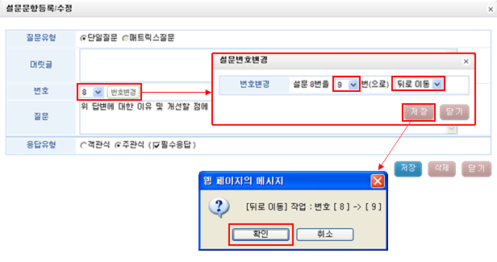

| 설문조사 : 설문관리 작성 (설문문항 뒤로이동 방법) |
| 1.설문조사 메뉴구성 | |
| 2.설문템플릿 작성 | |
| 3.설문관리 작성 | |
| 3-1.설문등록 | |
| 3-2.매트릭스 작성 | |
| 3-3.설문복사 | |
| 3-4.설문문항 교체 방법 | |
| 3-5.설문문항 뒤로이동 방법 | |
| 3-6.설문 HTML편집 방법 | |
| 4. 설문코드 | |
| 5. 설문조사 발송 방법 | |


|
||||||||||||||||||||||||||||||||
|
|
|||||||||||||||||||||||||||||||
|
||||||||||||||||||||||||||||||||

③ 뒤로 이동하실 문항번호를 선택 후 번호변경을 클릭합니다.
④ 뒤로이동방법(설문2번->0번 뒤로이동, 0번 뒤로 이동하시면 1번으로 이동이 됩니다.)
- 0번 뒤로 이동하시면 1번으로 이동이 되고 변경 전 문항번호가 한단계 아래로 모두
변경이 됩니다. 위 그림과 같이 설정 후 저장을 클릭합니다.
⑤ 뒤로이동 작업에 대해 다시 한번 확인 메세지가 나오고 확인버튼을 클릭하시면 됩니다.